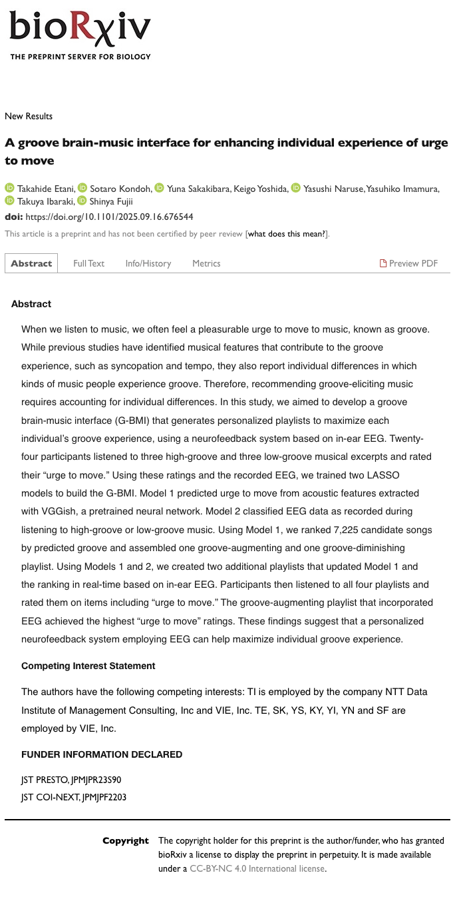

Preprint posted on bioRxiv:
A groove brain-music interface for enhancing individual experience of urge to move

| Publication: A groove brain-music interface for enhancing individual experience of urge to move bioRxiv / Neuroscience / Version 2 First posted September 18, 2025 Version 2: October 11, 2025 DOI: 10.1101/2025.09.16.676544 Preprint — not yet certified by peer review Authors: Takahide Etani, Sotaro Kondoh, Yuna Sakakibara, Keigo Yoshida, Yasushi Naruse, Yasuhiko Imamura, Takuya Ibaraki, and Shinya Fujii Authorship: 吉田慧悟は、本研究の共同著者（第4著者）として参加しています。論文には著者ごとの個別貢献は記載されていないため、担当範囲については共同著者であることを超えた記述を行っていません。 About the Research: 音楽を聴いたときに生じる、身体を動かしたくなる快い衝動は「グルーヴ」と呼ばれます。グルーヴを生みやすいテンポやシンコペーションなどの共通要素が知られる一方、どの音楽に強く反応するかには大きな個人差があります。 本研究では、個人ごとのグルーヴ体験を最大化するプレイリストを生成するため、耳内脳波（in-ear EEG）を用いた閉ループ型のgroove brain-music interface（G-BMI）を開発しました。 Method: 24名の参加者が、ハイ・グルーヴとロー・グルーヴの楽曲を聴きながらin-ear EEGを記録し、各曲について「身体を動かしたい衝動」と快感を評価しました。 Model 1は、事前学習済みニューラルネットワークVGGishで抽出した音響特徴から、個人の「身体を動かしたい衝動」をLASSO回帰で予測します。Model 2は、EEGをハイ・グルーヴ／ロー・グルーヴ聴取時の状態へ分類します。 7,225曲の候補をModel 1で順位づけし、グルーヴを高める／弱める方向と、EEGフィードバックの有無を組み合わせた4種類のプレイリストを作成。EEGを使用する条件では、各曲の聴取後に脳波から推定した反応を取り込み、モデルと楽曲順位をリアルタイムに更新しました。 Results: 音響特徴とリアルタイムEEGの両方を用いてグルーヴを高めるAugEEGプレイリストは、4条件中で最も高い「身体を動かしたい衝動」の評価を得ました。AugEEGは、グルーヴを弱めるDimNoEEGおよびDimEEG条件より有意に高く、DimEEGより総合的なグルーヴ評価も有意に高い結果となりました。 一方で、快感そのものの評価にはプレイリスト間の有意差が見られず、「身体を動かしたい衝動」と快感は関連しつつも異なる要素であることも示されました。研究結果は、音響特徴と個人の脳波反応を組み合わせたニューロフィードバックが、一人ひとりに適した音楽推薦へ応用できる可能性を示しています。 Funding: JST PRESTO（JPMJPR23S90） JST COI-NEXT（JPMJPF2203） |